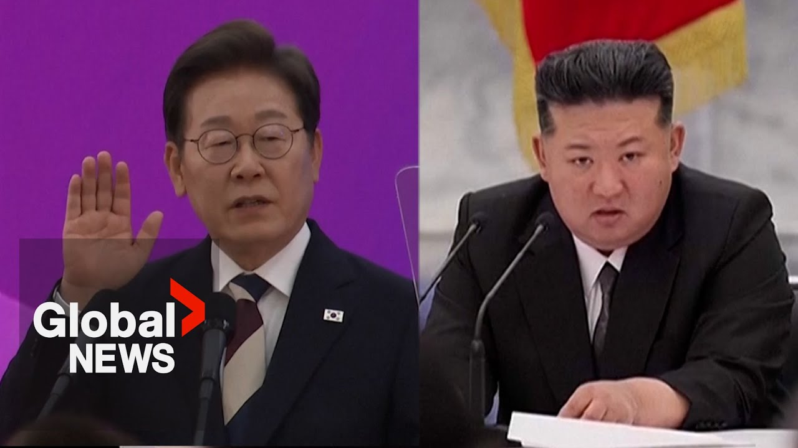

【韩国新任总统誓言重启与朝鲜对话，重振经济】
Summary: South Korea's new president pledges to restart dialogue with North Korea and revive the domestic economy, while addressing national security and welfare.
摘要： 韩国新任总统承诺重启与朝鲜的对话并重振国内经济，同时解决国家安全和福利问题。

⏱️ Estimated Reading Time: 2 min
📚 高考3500生词 📚 雅思生词 📚 托福生词 📚 GRE生词 📚 UP主自用生词
Monal turbulence I solemnly swear before the people that I will faithfully execute the duties of President by observing the Constitution, defending the State, striving for the peaceful unification of the fatherland, promoting domestic freedom and welfare, and developing national culture.
莫纳尔动荡中，我向人民庄严宣誓，我将恪守宪法，捍卫国家，致力于祖国的和平统一，促进国内自由与福利，并发展民族文化。
June 4, 25 years ago It is time to rebuild the people's livelihood and economy that have collapsed due to President Lee Jae-myung's indifference and irresponsibility toward peace and the destruction of our democracy by armored vehicles and automatic rifles, which have been reduced to a means of political strife.
25年前的6月4日，是时候重建因李在明总统对和平的冷漠和不负责任以及装甲车和自动步枪对我们民主的破坏而崩溃的民生和经济，这些已成为政治斗争的工具。
We will respond to North Korea 's nuclear weapons and military provocations with a strong deterrent based on the ROK-US military alliance, while opening channels of communication with North Korea and establishing peace on the Korean Peninsula through dialogue and cooperation.
我们将基于韩美军事同盟的强大威慑力应对朝鲜的核武器和军事挑衅，同时与朝鲜开启沟通渠道，通过对话与合作在朝鲜半岛建立和平。
As the majority of our people hoped, and now that democracy is alive and well, we have high expectations for the future in terms of politics and the economy.
正如我们大多数人民所希望的，既然民主生机勃勃，我们对未来的政治和经济抱有很高的期望。
What I also ask of the President is, as everyone agrees, that he revive the economy a bit, that he thinks about the invisible property class, and that he is more friendly with North Korea, not just small business owners [music] [applause] I can't leave. [clap]
我对总统的另一个要求是，正如大家所认同的，他应该稍微重振经济，考虑隐形财产阶层，并对朝鲜更加友好，而不仅仅是小企业主[音乐][掌声]我不能离开。[鼓掌]